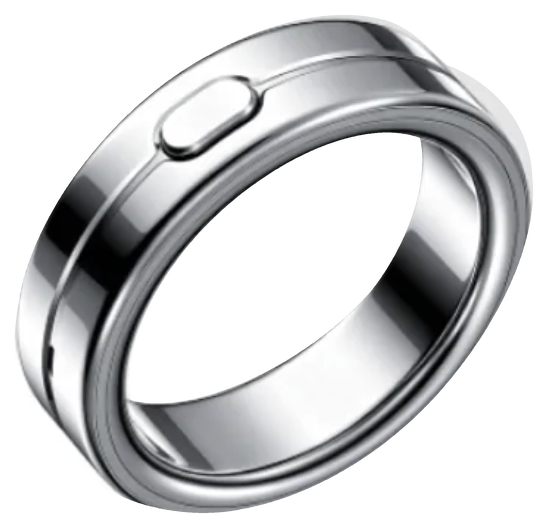
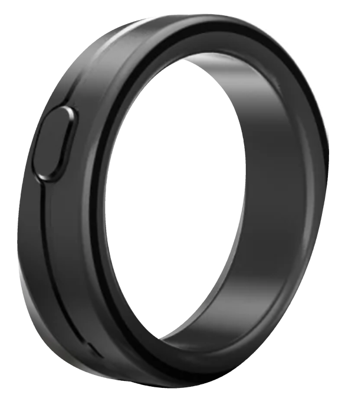
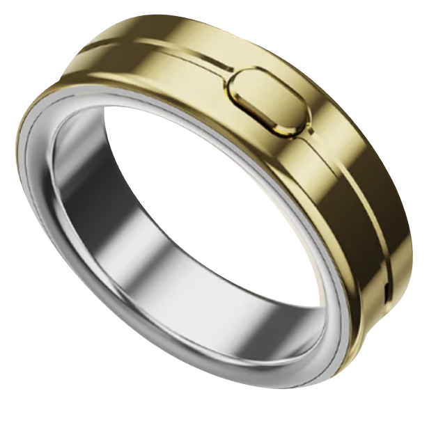

Wear the Context.
Capture conversations and ideas with a ring. Bring the context you choose into your AI workflow.
 A small gesture. A moment kept.
Real life is the starting point.
A small gesture. A moment kept.
Real life is the starting point.




Made for the moments between screens.Real life → Your context → Your AI